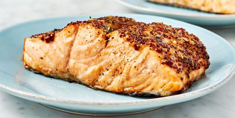

Air Fryer Salmon

Description
For the fastest meal ever, turn to your air fryer. This salmon cooks in just 10 minutes
and comes out perfectly tender and flaky on the inside with an amazing and comes out top crust.
The sweet mustard topping makes this one of our favorite salmon dishes. While your air
fryer is out go ahead and make some air fryer potatoes to go with it or even some
chocolate chip cookies!
Ingredients
- 2 (6-oz.) salmon fillets
- Kosher salt
- Freshly ground black pepper
- 2 tsp. extra-virgin olive oil
- 2 tbsp. whole grain mustard
- 1 tbsp. packed brown sugar
- 1 clove garlic, minced
- 1/2 tsp. thyme leaves
Steps
- Season salmon all over with salt and pepper.
In a small bowl, whisk together oil, mustard,
sugar, garlic, and thyme. Spread on top of salmon.
- Arrange salmon in air fryer basket.
Set air fryer to 400° and cook for 10 minutes.